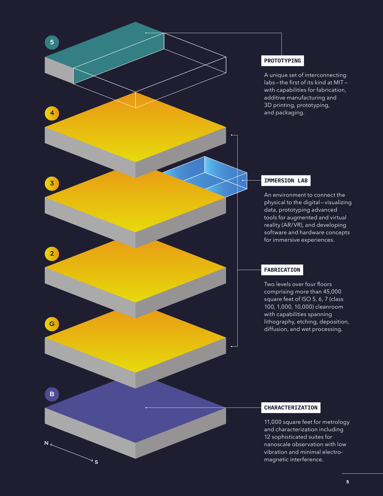
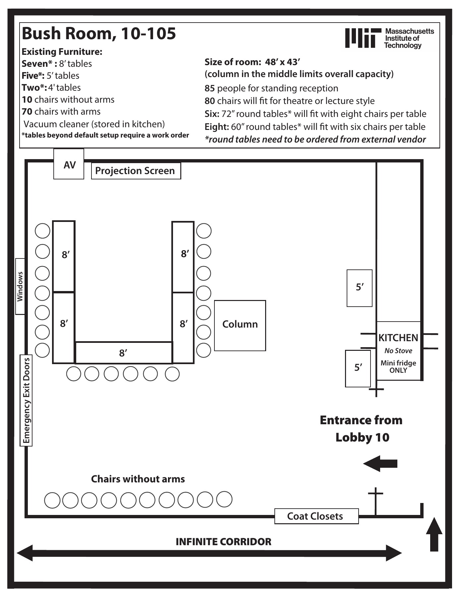

16号楼 · 多兰斯楼 Dorrance Building
AHP第1名 · 0.827516
核心候选；等待完整平面
已保存官方校园地图入口和Terrascope官方页面。后者说明跨学科课程、聚会与休息学习空间，页面地址16-177；不能据此推断整栋建筑各房间功能。公共资料中有2023年楼层连接示意。
研究重点：校园网络中的连接角色、跨学科学习活动与公共空间。
待补：完整逐层平面、跨楼入口及楼梯位置的房间级核对、实验/办公/教学分布；当前不能计算整楼内部空间句法。
本地文件
12号楼 · MIT.nano / Lisa T. Su Building
AHP第2名 · 0.731932
核心案例；资料最充分
12.pdf为2024年官方手册，元数据生成及修改日期2024-11-21；第4—5页含功能分层轴测示意，第12—13页涉及汇聚交流与STUDIO.nano。另有2022年室外导览、2021年三层局部图。均属于2018年启用的新MIT.nano，未收入旧12号楼资料。

研究重点：共享科研设施、实验可视性、公共走廊与展陈、庭院路径。
待补：完整房间级逐层平面、可校准尺度、各房间实际用途及净面积；公开手册不能替代完整图纸。
本地文件
13号楼 · 范内瓦·布什楼 Vannevar Bush Building
AHP第3名 · 0.687622
核心候选；现状完整平面未取得
已保存MIT官方建筑介绍；其描述首层柱廊与大厅、原拟入口角色。2023年公共连接图可辅助跨楼分析。只有2004年公开课程文件含首层建筑平面，单独放在“历史补充”，不标为现状图。
研究重点：入口与公共大厅、科研空间和校园通行的关系。
待补：新版整层及全部楼层平面、房间功能、改造记录与可校准尺度；旧图只能提出假设，不能直接支撑现状面积统计。
本地文件
26号楼 · 康普顿实验楼 Compton Laboratories
AHP第4名 · 0.656685
补充候选；等待完整平面
已保存MIT校园地图建筑入口；公共资料中的2023年地图包含多楼层连接示意。尚未取得可公开下载的完整房间级平面。
研究重点：科研与教学活动的联系及楼群连接。
待补：完整逐层平面、功能分配与空间尺度；不能用其它学校同为26号楼的平面代替。
本地文件
10号楼 · 麦克劳林楼 Maclaurin Building
AHP第5名 · 0.624258
补充候选；局部空间参照
已保存10-105 Bush Room的2025版家具布置平面（元数据修改日期2025-02-11）。它是10号楼的一间活动房间，既不是13号楼，也不是10号楼完整首层平面。历史13/10首层图在13/历史补充中。

研究重点：公共活动房间与大厅/交通的联系。
待补：建筑整体的新平面和房间用途；单个房间图不足以支撑整楼分析。
本地文件